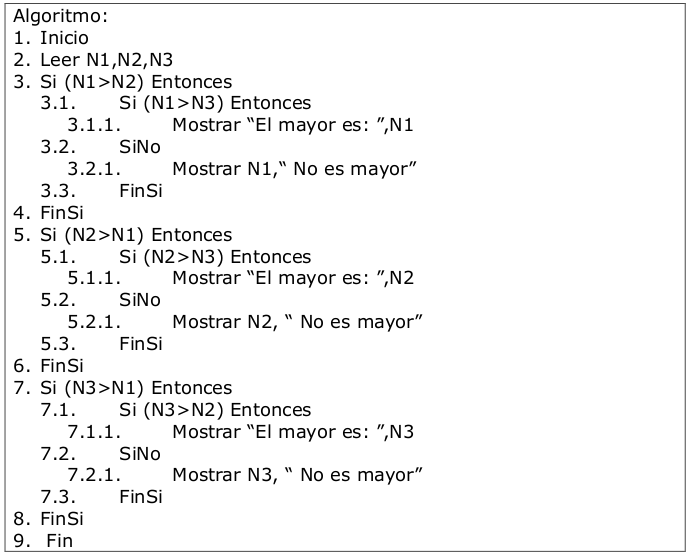

Temario
-
Unidad 2-Comprendiendo los Algoritmos.
- 1. Inicio
- 2. Leer N
- 3. P=1
- 4. Si N>1 Entonces
- 4.1. P = P * N
- 4.2. N = N – 1
- 5. Mostrar P
- 6. Fin
- n! = 1 ; n·(n-1)!
- si n=0 ; si n>0
- Entonces, n!=1·2·3·4 ··· n
- n! = sqrt{2pn} (n/e) n (1 + Q(1/n))
- donde e es la base del logaritmo natural.
- Usando la aproximación de Stirling, podemos demostrar que:
- n! = o(n n )
- n! = (2 n )
- lg(n!) = Q(n lg n)
- F 0 = 0
- F 1 = 1
- F i = F i-1 + F i-2 para i ≥ 2
- Σ i = n(n+1)/2
- Σ I 2 = (2n 3 +3n 2 + n)/6
- Σ 1 log n n = n log n
- Σ ∞ a i = 1/(1-a)
- Fib(n)=Fib(n-1)+Fib(n-2) +Fib(n-3)...
- Fib(5)=Fib(4)+ Fib(3)+ Fib(2)=9
- Fib(5)=4+3+2=9
- - Un número es positivo cuando es mayor de cero y negativo cuando es menor de cero.
- Palabras reservadas (inicio, fin, si-entonces, etc.)
- Identificadores (nombres de variables, esencialmente)
- Caracteres especiales (coma, apóstrofe, etc.)
- Constantes
- Variables
- Expresiones
- Instrucciones
- Instrucción de inicio/fin
- Instrucción de asignación
- Instrucción de lectura
- Instrucción de escritura
- Instrucción de bifurcación
- Instrucciones de repetición o ciclos
- Bucles
- Contadores
- Acumuladores
- Interruptores
- Estructuras:
- -Secuenciales
- -Selectivas
- -Repetitivas
- 1. Decisión
- 2. Cuerpo del bucle
- 3. Salida del bucle
- 1. Inicio
- 2. Mayor=0
- 3. Contador=1
- 4. Leer N
- 5. Leer Numero
- 6. Si Numero>Mayor entonces
- 6.1. Mayor=Numero
- 6.2. Contador = Contador + 1
- 7. Si Contador < N Entonces
- 7.1. Mostrar Mayor
- 8. Fin
- 1. Inicio
- 2. Suma=0
- 3. Leer Total
- 4. cont=0
- 5. Repetir hasta que cont=5
- 4.1. Leer Num
- 4.2. cont=cont+1
- 5. Hasta que cont=5
- 6. Mostrar Suma
- 7. Fin
- - Simples
- - Dobles
- - Multiples
- Si condición Entonces
- ----Instrucciones_V
- SiNo
- ----Instrucciones_F
- FinSi
- Según variable
- ----Caso valor1
- --------instrucciones
- ----Caso valor2
- --------instrucciones
- FinSegun
- Bucle Mientras
- Bucle Repetir
- Bucle Desde/Hasta
- Mientras condicion Hacer
- ----Instrucciones del Bucle
- ----Invalidación de la condición
- FinMientras
- Repetir
- ----Instrucciones del Bucle
- Hasta que condición
- Para variable=valor_inicial Hasta variable=valor_final
- ----Instrucciones del Bucle
- FinPara


Estructuras de Control
Recursividad
La recursiva es aquella en la que el objeto que se define forma parte de la definición (recuerde la regla gramatical: lo definido nunca debe formar parte de la definición). La característica importante de la recursividad es que siempre existe un medio de salir de la definición, mediante la cual se termina el proceso recursivo.
Resumiendo, un algoritmo es recursivo si se llama a sí mismo para hacer parte del trabajo. Para que este enfoque sea exitoso, la llamada debe ser en un problema menor que al originalmente intentado.
En general, un algoritmo recursivo tiene dos partes:
Ejemplos de aplicación: cálculo del factorial, torres de Hanoi y función de Ackermann.
Resolución del ejercicio de cálculo del factorial: Realizar un algoritmo que permita calcular el factorial de un número.
Factoriales
La notación n! se define para los enteros n ≥ 0 como:
Una cota superior débil de la función factorial es n! ≤ n n , pues cada uno de los n términos en el producto factorial es a lo más n. La aproximación de Stirling, proporciona una cota superior ajustada, y también una cota inferior:
Numeros de Fibonacci
Los números de Fibonacci se recurrencia:
Entonces cada número de Fibonacci es la suma de los números previos, produciendo la sucesión: 0, 1, 1, 2, 3, 5, 8, 13, 21, 34, 55, ...
Sumatorias y recurrencias
Las sumatorias se usan mucho para el análisis de la complejidad de programas, en especial de ciclos, ya que realizan conteos de operaciones cada vez que se entra al ciclo.
Cuando se conoce una ecuación que calcula el resultado de una sumatoria, se dice que esta ecuación representa una solución en forma cerrada. Ejemplos de soluciones en forma cerrada:
El tiempo de ejecución para un algoritmo recursivo está más fácilmente expresado por una expresión recursiva. Una relación de recurrencia define una función mediante una expresión que incluye una o más instancias (más pequeñas) de sí misma.
Por ejemplo: n! = (n-1)! n , 1! = 0! = 1
La secuencia de Fibonacci:
Nosotros sabemos que:
Elementos de un Programa
Los lenguajes de programación se componen de elementos básicos, los cuales se usan como bloques constructivos; también existen reglas que harán uso de la combinación de estos elementos. A estas reglas les llamamos la Sintaxis del lenguaje, sólo las instrucciones que contienen una sintaxis correcta pueden ser interpretadas por la computadora y los programas que contengan errores de sintaxis son rechazados por esta misma.
Los elementos que constituyen un programa o algoritmo son:
Un programa debe contener un conjunto de especificaciones que deben ser establecidas por el programador, estas son: entrada, salida y algoritmos de resolución que tendrán las técnicas para obtener las salidas a partir de las entradas. El algoritmo solución, es en realidad el conjunto de códigos que transforman las entradas del programa (datos), en salidas (resultados).
Las entradas al programa deben ser establecidas por el programador. Las entradas se darán por medio de un dispositivo de entrada, puede ser teclado, disco, teléfono, etc., a este proceso se le conoce como entrada de datos, operación de lectura o acción de leer.
Las salidas de datos se presentan en dispositivos periféricos de salida, puede ser pantalla, impresora, discos, etc. La operación de salida de datos se conoce también como escritura o acción de escribir.
Instrucciones
El diseño del algoritmo y luego la codificación de programas consiste en la definición de acciones o instrucciones que van a dar solución al problema que se está tratando. Luego de escribirse las acciones o instrucciones, se deberá ir al proceso de almacenamiento en la memoria conservando el orden lógico para su posterior ejecución; es decir en secuencia. Un programa puede ser lineal o no lineal. Un programa es lineal cuando las instrucciones siguen una secuencia, sin bifurcaciones, decisión ni comparaciones. Cuando el programa es no lineal, significa que la secuencia es interrumpida mediante instrucciones de bifurcación.
De acuerdo al tipo de lenguaje de programación en que se trabaja las instrucciones van a ser diferentes. Pero las instrucciones básicas son independientes del lenguaje. Las instrucciones básicas pueden clasificarse de la siguiente forma:
Hay otros elementos que también son básicos y forman parte de los programas. Son de mucha importancia la comprensión y el funcionamiento, porque gracias a ellos se llegará a un correcto diseño del algoritmo. Estos son:
Bucles
Los bucles son elementos que tiene instrucciones que se repiten un cierto número de veces, mientras una condición es cumplida; se conoce como lazo (loop). La condición es un mecanismo que determina las tareas repetitivas el cual debe ser establecido por el programador, éste puede ser verdadero o falso y se comprueba una vez a cada paso o iteración del bucle.
Un bucle está compuesto de tres partes:
La forma como se disponen los bucles también lleva un nombre, de allí que pueden ser anidados o independientes. Los que son anidados son cuando se encuentran uno contenido en otro, y los independientes son los que se encuentran libres, sin la influencia de otro.
¿Qué es un contador?
La programación permite automatizar procedimientos manuales, en ocasiones, es posible llevar cuentas en un mismo programa y que al final nos muestre los resultados de éstas. Es aquí donde interviene el contador, el cual es, una variable que se incrementa o decremento en una cantidad constante y que contiene el resultado de una cuenta. Se implementa a modo de ecuación: cont = cont + 1
Ejemplo: Realizar un algoritmo que permita leer N números y mostrar el mayor.
¿Qué es un Acumulador?
El acumulador es una variable que suma sobre sí misma un conjunto de valores para de esta manera tener la suma de todos ellos en una sola variable, es decir, actúa como totalizador, almacenando cantidades variables que resulten de sumas sucesivas. Se implementa a modo de ecuación: acum = acum + var
Ejemplo: Realizar un algoritmo que permita leer 5 números y mostrar la suma de estos.
La diferencia entre el acumulador y el contador es que mientras el primero aumenta un número constante, el otro va aumentando en una cantidad variable.
Estructuras Selectivas:
Este tipo de estructura es usada cuando el programador quiere dar dos o más caminos como alternativa en un algoritmo a seguir, según los parámetros especificados. Una instrucción de decisión evalúa una condición y, en función del resultado, se bifurcará el algoritmo a un determinado punto.
Es de gran utilidad la especificación formal de los algoritmos, para cuando éste requiera una descripción más complicada que una lista sencilla de instrucciones. Este es el caso cuando existe un número de posibles alternativas que resulten de la evaluación de una determinada condición. Este tipo de estructuras son utilizadas para tomar decisiones lógicas, llamándose por esta razón estructuras de decisión o alternativas. En esta estructura es evaluada una condición y de acuerdo al resultado el algoritmo opta por una de las alternativas. Las condiciones son especificadas utilizando expresiones lógicas.
En ocasiones es necesario evaluar una entrada o un resultado. En un algoritmo se evalúan condiciones para ejecutar un grupo de instrucciones a cambio de otro grupo.
Estas condiciones se dan a modo de comparaciones entre dos elementos, utilizando operadores relacionales.
Además se tienen operadores lógicos, los cuales se utilizan para realizar más de una comparación.
Para representar una estructura selectiva se hace uso de palabras en pseudocódigo. Las estructuras selectivas o alternativas pueden ser:
Estructura SI (if)
La estructura alternativa simple si-entonces (en inglés if-then) lleva a cabo una acción al cumplirse una determinada condición. La selección si-entonces evalúa la condición y - si la condición es verdadera, ejecuta la acción SI - si la condición es falsa, no ejecuta nada.
Existen limitaciones en la estructura anterior, y se necesitará normalmente una estructura que permita elegir dos opciones o alternativas posibles, de acuerdo al cumplimiento o no de una determinada condición, por lo cual es posible utilizar la alternativa doble (si-entonces-sino/if-then-else).
La sintaxis general es:
Ejemplo:

Estructura Segun (case)
Generalmente es necesario que existan más de dos alternativas de las cuales poder elegir. Esta opción podría solucionar problemas que requieren de decisiones no usuales, por estructuras alternativas simples o dobles, anidadas o en cascada. Sin embargo, se pueden plantear serios problemas de escritura del algoritmo y naturalmente de legibilidad, si el número de alternativas es grande.
La sintaxis general es:
Ejemplo:
Estructuras Iterativas
Las estructuras que repiten una secuencia de instrucciones un número determinado de veces se denominan bucles y, al hecho de repetir la ejecución de una secuencia de acciones se denomina iteración.
Las estructuras iterativas son, en la mayoria de los lenguajes de programacion las siguientes:
Bucle Mientras
Es en la que el cuerpo del bucle se repite en tanto se da una determinada condición. Los ciclos son estructuras de control que permiten ejecutar varias veces una operación.
Este ciclo se repite mientras se cumpla una cierta condición. Las palabras clave "mientras" y "hacer" señalan que se trata de un ciclo mientras. La condición se verifica antes de ejecutar la operación, de manera que, cada vez que la condición sea verdadera se hace un bucle (una repetición).
Sintaxis:
Ejemplo:
Bucle Repetir
Generalmente se quiere que un bucle se ejecute, mínimo una vez, antes de que la condición de repetición sea cumplida o se compruebe. En la estructura mientras, si la condición es falsa, no se dará ninguna ejecución. Esta estructura se ejecutará mientras se cumpla una condición determinada, la cual es comprobada al final del bucle.
En este ciclo se ejecuta una operación hasta que se cumpla una condición. Ahora se ejecuta primero la operación y se verifica la condición después.
Sintaxis:
Ejemplo:
Bucle Desde/Hasta
Muchas veces ya se conoce el número de veces que se deben ejecutar las acciones de un bucle. Pero cuando se quiere que el número de iteraciones sea un número determinado, los programadores utilizan un tipo de estructura desde o para (for, en inglés).
Sintaxis:
Ejemplo: